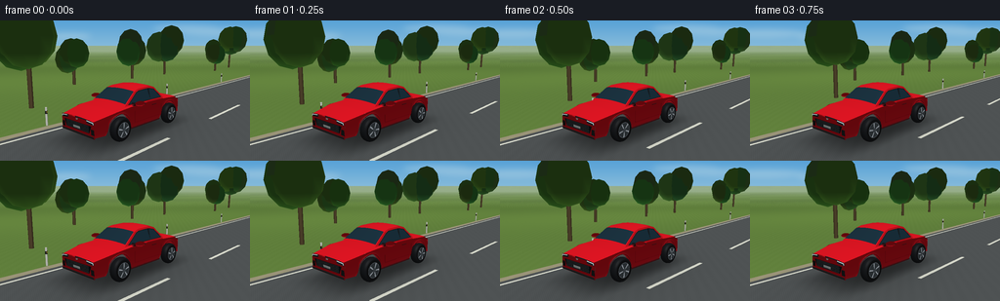
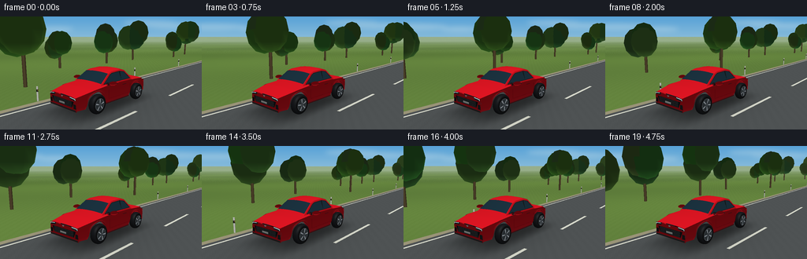

CODING AGENTS AS PIXEL WORLD MODELS
traex/GPT-6.1-Sol · instance_preservation_0028
点击播放 · 原生 RGB 像素
逐轮保存的候选
回放视频、检查图与代码变化。
每份候选均可单独播放。实际图片检查记录在下方工具轨迹中。
候选 01播放与检查图
点击播放 · 原生 RGB 像素


展开代码变化
--- 上一保存版本
+++ 本次保存版本
@@ -0,0 +1,295 @@
+from pathlib import Path
+import math
+import numpy as np
+from PIL import Image, ImageDraw, ImageFilter
+import artifact_io
+
+ROOT = Path(__file__).resolve().parent
+W,H,S = 256,144,3
+RW,RH=W*S,H*S
+F=RH/(2*math.tan(math.radians(31)/2))
+SUN=np.array([-0.45,0.35,0.82]); SUN/=np.linalg.norm(SUN)
+
+# A small, purpose-built triangle rasterizer: all geometry is generated below.
+class Scene:
+ def __init__(self): self.faces=[]
+ def tri(self,a,b,c,color,normals=None,spec=0.0,power=32):
+ p=np.array([a,b,c],float)
+ if normals is None:
+ n=np.cross(p[1]-p[0],p[2]-p[0]); n/=max(np.linalg.norm(n),1e-10)
+ normals=np.tile(n,(3,1))
+ self.faces.append((p,np.array(normals),np.array(color,float),spec,power))
+ def quad(self,a,b,c,d,color,spec=0,power=32):
+ self.tri(a,b,c,color,spec=spec,power=power);self.tri(a,c,d,color,spec=spec,power=power)
+ def grid(self,points,color,spec=0,power=32,flip=False):
+ p=np.array(points,float)
+ du=np.gradient(p,axis=0);dv=np.gradient(p,axis=1)
+ n=np.cross(du,dv)
+ n/=np.maximum(np.linalg.norm(n,axis=2,keepdims=True),1e-10)
+ if flip:n=-n
+ for i in range(len(p)-1):
+ for j in range(p.shape[1]-1):
+ ids=[(i,j),(i+1,j),(i+1,j+1),(i,j+1)]
+ for inds in ([0,1,2],[0,2,3]):
+ self.tri(*[p[ids[k]] for k in inds],color,[n[ids[k]] for k in inds],spec,power)
+ def ellipsoid(self,center,radii,color,nu=16,nv=8,spec=0):
+ c=np.array(center);r=np.array(radii);pts=[]
+ for th in np.linspace(.001,math.pi-.001,nv+1):
+ pts.append([c+r*np.array([math.sin(th)*math.cos(ph),math.sin(th)*math.sin(ph),math.cos(th)]) for ph in np.linspace(0,2*math.pi,nu+1)])
+ self.grid(pts,color,spec,flip=True)
+ def cylinder(self,a,b,r,color,segments=12):
+ a=np.array(a);b=np.array(b);axis=b-a;axis/=np.linalg.norm(axis)
+ u=np.cross(axis,[0,0,1])
+ if np.linalg.norm(u)<.01:u=np.cross(axis,[0,1,0])
+ u/=np.linalg.norm(u);v=np.cross(axis,u)
+ ring=[r*(u*math.cos(t)+v*math.sin(t)) for t in np.linspace(0,2*math.pi,segments+1)]
+ self.grid([[a+d,b+d] for d in ring],color)
+ for i in range(segments):self.tri(b,b+ring[i],b+ring[i+1],color)
+
+RED=(205,16,27); RED_DARK=(169,10,18); GLASS=(28,51,64)
+
+def make_car(ypos,phase):
+ s=Scene()
+ def P(x,y,z):return (x+1.85,y+ypos,z)
+ ys=np.unique(np.r_[np.linspace(-2.22,2.24,72),[-1.32,-.92,.55,1.32]])
+ def top(y):return float(np.interp(y,[-2.22,-1.9,-1.0,.4,1.45,2.24],[.79,.98,1.02,1.035,.95,.80]))
+ def width(y):return float(np.interp(y,[-2.22,-1.8,1.5,2.24],[.79,.94,.94,.81]))
+ def arch(y):
+ z=.29
+ for wy in [-1.32,1.32]:
+ d=abs(y-wy)
+ if d<.452:z=max(z,.43+math.sqrt(.452**2-d*d))
+ return z
+ # Continuous sculpted side surfaces, cut away around the wheels.
+ for sign in [-1,1]:
+ pts=[]
+ for y in ys:
+ w=width(y);lo=arch(y);hi=top(y)
+ pts.append([P(sign*(w-.09),y,lo),P(sign*w,y,lo+(hi-lo)*.25),P(sign*(w+.005),y,lo+(hi-lo)*.76),P(sign*(w-.06),y,hi)])
+ s.grid(pts,RED,.42,64,flip=sign==1)
+ # Fine dark arch lip gives an unambiguous opening around each tire.
+ for wy in [-1.32,1.32]:
+ arc=[]
+ for a in np.linspace(0,math.pi,32):
+ yy=wy+.454*math.cos(a);zz=.43+.454*math.sin(a)
+ xx=sign*(width(yy)+.011)
+ arc.append([P(xx,yy,zz),P(xx,yy,zz+.024)])
+ s.grid(arc,(89,11,16),.1,flip=sign==1)
+ # Hood and rear deck have gentle crowns, not flat rectangular slabs.
+ for low,high in [(.62,2.24),(-2.22,-1.06)]:
+ pts=[]
+ for y in np.linspace(low,high,20):
+ w=width(y)-.06
+ pts.append([P(x,y,top(y)+.038*(1-(x/w)**2)) for x in np.linspace(-w,w,15)])
+ s.grid(pts,RED,.72,85,flip=True)
+ for y,flip in [(2.24,False),(-2.22,True)]:
+ w=width(y);z=top(y)
+ pts=[[P(x,y,zz) for zz in [.29,.42,.68,z]] for x in np.linspace(-w,w,16)]
+ s.grid(pts,RED,.4,60,flip=flip)
+ # Curved cabin shell, shaped like a modern coupe.
+ cabin=[(-1.17,1.025,.79),(-.72,1.47,.665),(-.44,1.53,.635),(.16,1.505,.64),(.37,1.44,.675),(.96,1.035,.79)]
+ roof=[]
+ for y,z,w in cabin:
+ roof.append([P(x,y,z+.055*(1-(x/w)**2)) for x in np.linspace(-w,w,17)])
+ s.grid(roof,RED,.65,75,flip=True)
+ # Front windshield laid over the rounded shell.
+ win=[]
+ for t in np.linspace(0,1,12):
+ y=.39+.51*t;z=1.432-.345*t;w=.66+.09*t
+ win.append([P(x,y,z+.045*(1-(x/w)**2)+.01) for x in np.linspace(-w,w,18)])
+ s.grid(win,GLASS,.78,120,flip=True)
+ # Subtle sky reflection and a windshield wiper.
+ for x in [-.24,.24]:
+ s.cylinder(P(x-.19,.864,1.123),P(x+.16,.79,1.17),.008,(13,22,27),6)
+ rear=[]
+ for t in np.linspace(0,1,8):
+ y=-1.105+.345*t;z=1.09+.33*t;w=.75-.09*t
+ rear.append([P(x,y,z+.04*(1-(x/w)**2)+.009) for x in np.linspace(-w,w,16)])
+ s.grid(rear,GLASS,.6,100,flip=True)
+ for sign in [-1,1]:
+ # Red side cabin pillars with inset glass and window divider.
+ side=[P(sign*.79,-1.17,1.025),P(sign*.665,-.72,1.47),P(sign*.635,-.44,1.53),P(sign*.64,.16,1.505),P(sign*.675,.37,1.44),P(sign*.79,.96,1.035)]
+ for j in range(1,len(side)-1):s.tri(side[0],side[j],side[j+1],RED,spec=.4)
+ coords=[(-1.01,1.076,.786),(-.67,1.405,.691),(-.41,1.458,.66),(.16,1.437,.67),(.31,1.389,.702),(.79,1.074,.797)]
+ poly=[P(sign*x,y,z) for y,z,x in coords]
+ for j in range(1,len(poly)-1):
+ s.tri(poly[0],poly[j],poly[j+1],GLASS,normals=np.tile([sign,.04,.25],(3,1)),spec=.5,power=80)
+ for a,b in zip(poly,poly[1:]+poly[:1]):s.cylinder(a,b,.012,(39,35,35),6)
+ s.cylinder(P(sign*.766,-.37,1.08),P(sign*.671,-.37,1.45),.023,(25,28,30),6)
+ # Door gap, flush handle, and side skirt.
+ for ya,yb in [(-.83,.65)]:
+ for a,b in [((ya,.88),(ya,.49)),((ya,.49),(yb,.49)),((yb,.49),(yb,.88))]:
+ s.cylinder(P(sign*.947,a[0],a[1]),P(sign*.947,b[0],b[1]),.005,(103,7,13),5)
+ s.cylinder(P(sign*.951,-.51,.927),P(sign*.951,-.27,.927),.013,(71,16,21),8)
+ s.cylinder(P(sign*.905,-.77,.31),P(sign*.905,.80,.31),.025,(77,16,20),8)
+ s.cylinder(P(sign*.79,.60,1.10),P(sign*1.06,.57,1.095),.031,(28,31,33),8)
+ s.ellipsoid(P(sign*1.085,.56,1.12),(.145,.19,.077),RED,12,6,.5)
+ s.quad(P(sign*1.20,.43,1.09),P(sign*.99,.43,1.09),P(sign*.99,.43,1.145),P(sign*1.20,.43,1.145),(49,64,69),.6)
+ # Front air intakes and white LED lamps; all remain attached to the car.
+ yf=2.247
+ s.quad(P(-.57,yf,.43),P(.57,yf,.43),P(.67,yf,.66),P(-.67,yf,.66),(16,22,25),.15)
+ for zz in np.linspace(.455,.635,5):s.cylinder(P(-.56,yf+.007,zz),P(.56,yf+.007,zz),.009,(52,56,57),6)
+ for xx in np.linspace(-.54,.54,14):s.cylinder(P(xx,yf+.005,.452),P(xx,yf+.005,.638),.004,(30,33,34),5)
+ for sign in [-1,1]:
+ s.quad(P(sign*.47,yf+.006,.727),P(sign*.79,yf+.006,.707),P(sign*.78,yf+.006,.798),P(sign*.43,yf+.006,.825),(35,47,52),.65)
+ s.cylinder(P(sign*.48,yf+.013,.798),P(sign*.77,yf+.013,.773),.013,(233,246,248),8)
+ s.cylinder(P(sign*.75,yf+.013,.771),P(sign*.77,yf+.013,.726),.010,(221,238,242),8)
+ s.quad(P(sign*.65,yf,.40),P(sign*.80,yf,.40),P(sign*.78,yf,.57),P(sign*.65,yf,.57),(22,26,27))
+ # Back tail lamps, visible from the changing three-quarter view.
+ s.quad(P(sign*.41,-2.23,.77),P(sign*.77,-2.23,.73),P(sign*.78,-2.23,.83),P(sign*.42,-2.23,.87),(119,7,14),.5)
+ s.ellipsoid(P(0,yf+.01,.765),(.058,.014,.028),(193,199,200),12,5,.8)
+ s.quad(P(-.175,yf+.024,.483),P(.175,yf+.024,.483),P(.175,yf+.024,.557),P(-.175,yf+.024,.557),(209,218,216))
+ s.cylinder(P(-.79,yf,.325),P(.79,yf,.325),.025,(28,30,31),10)
+ # Four rubber tires, silver alloys and rotating spokes.
+ for sign in [-1,1]:
+ for wy in [-1.32,1.32]:
+ xc=sign*.946;zc=.421;radius=.391
+ tire=[]
+ for a in np.linspace(0,2*math.pi,49):
+ row=[]
+ for t in np.linspace(-math.pi/2,math.pi/2,9):
+ x=xc+sign*.13*math.sin(t);r=.322+.069*math.cos(t)
+ row.append(P(x,wy+r*math.sin(a),zc+r*math.cos(a)))
+ tire.append(row)
+ s.grid(tire,(24,26,29),.13,20,flip=sign==1)
+ outer=xc+sign*.132
+ ann=[]
+ for a in np.linspace(0,2*math.pi,49):
+ ann.append([P(outer+sign*.01*math.sin(math.pi*t),wy+r*math.sin(a),zc+r*math.cos(a)) for t,r in zip(np.linspace(0,1,5),np.linspace(.243,.326,5))])
+ s.grid(ann,(29,30,33),.15,25,flip=sign==1)
+ # Inset brake disk.
+ center=P(outer-sign*.009,wy,zc)
+ for a,b in zip(np.linspace(0,2*math.pi,49)[:-1],np.linspace(0,2*math.pi,49)[1:]):
+ s.tri(center,P(outer-sign*.009,wy+.244*math.sin(a),zc+.244*math.cos(a)),P(outer-sign*.009,wy+.244*math.sin(b),zc+.244*math.cos(b)),(54,60,65),normals=np.tile([sign,0,0],(3,1)),spec=.15)
+ ring=[]
+ for a in np.linspace(0,2*math.pi,49):ring.append([P(outer+sign*.003,wy+r*math.sin(a),zc+r*math.cos(a)) for r in [.225,.245]])
+ s.grid(ring,(153,164,173),.6,60,flip=sign==1)
+ for k in range(5):
+ a=phase+2*math.pi*k/5
+ for shift in [-.044,.044]:
+ q=[]
+ for r,t in [(.061,a-.17+shift),(.227,a-.075+shift),(.227,a+.068+shift),(.072,a+.22+shift)]:q.append(P(outer+sign*.016,wy+r*math.sin(t),zc+r*math.cos(t)))
+ s.quad(*q,(174,182,191),.6,55)
+ s.ellipsoid(P(outer+sign*.020,wy,zc),(.013,.065,.065),(112,121,130),12,6,.5)
+ return s
+
+# The stationary scenery is shared across frames. Only the camera and car move.
+def scenery():
+ rng=np.random.default_rng(903)
+ s=Scene()
+ for sign in [-1,1]:
+ for i in range(22):
+ yy=-28+i*5.8+rng.uniform(-1,1);xx=sign*rng.uniform(6.0,14.0)
+ height=rng.uniform(3.0,5.4)
+ s.cylinder((xx,yy,0),(xx,yy,height*.7),.12,(90,75,49),8)
+ # Overlapping rounded crowns make organic, softly shaded trees.
+ for j in range(4):
+ ox=rng.uniform(-.65,.65);oy=rng.uniform(-.5,.5);oz=rng.uniform(-.45,.5)
+ s.ellipsoid((xx+ox,yy+oy,height*.73+oz),(height*.30,height*.31,height*.36),tuple(rng.uniform([40,81,33],[66,111,45])),10,6)
+ for sign in [-1,1]:
+ for yy in np.arange(-30,120,8):
+ x=sign*4.1
+ s.cylinder((x,yy,0),(x,yy,.70),.044,(224,226,217),8)
+ s.cylinder((x,yy,.45),(x,yy,.57),.047,(39,43,40),8)
+ # Tiny amber roadside reflectors.
+ s.ellipsoid((x-.052,yy,.53),(.012,.027,.042),(224,170,63),6,4)
+ return s
+
+def render(scene,car,eye,target,ypos,index):
+ eye=np.array(eye,float);target=np.array(target,float)
+ f=target-eye;f/=np.linalg.norm(f);right=np.cross(f,[0,0,1]);right/=np.linalg.norm(right);up=np.cross(right,f)
+ basis=np.stack([right,up,f])
+ yy,xx=np.mgrid[0:RH,0:RW]
+ rays=f[None,None,:]+(xx[...,None]-RW/2)/F*right-(yy[...,None]-RH/2)/F*up
+ # Sky and distant atmospheric landscape.
+ sky=np.empty((RH,RW,3),float)
+ t=np.clip(yy/RH*2.4,0,1)[...,None]
+ sky[:]=np.array([88,162,215])*(1-t)+np.array([192,218,224])*t
+ # Thin, softly feathered clouds, intentionally well above the road.
+ cloud=Image.new('L',(RW,RH),0);d=ImageDraw.Draw(cloud)
+ for cx,cy,rx,ry in [(40,39,125,12),(211,48,68,9),(570,24,101,10),(670,35,113,11)]:
+ d.ellipse((cx-rx,cy-ry,cx+rx,cy+ry),fill=140)
+ c=np.asarray(cloud.filter(ImageFilter.GaussianBlur(9)),float)[...,None]/255*.45
+ sky=sky*(1-c)+np.array([247,249,241])*c
+ im=Image.fromarray(np.uint8(sky));d=ImageDraw.Draw(im)
+ for base,col,amp in [(118,(127,159,151),29),(137,(99,140,111),22)]:
+ points=[(0,RH)]
+ for x in range(-10,RW+11,6):
+ z=base-amp*(.5+.5*math.sin(x*.011+.4)) - 8*math.sin(x*.026+index*.008)
+ points.append((x,z))
+ points.append((RW,RH));d.polygon(points,fill=col)
+ image=np.asarray(im,dtype=float).copy()
+ valid=rays[:,:,2]<-1e-5
+ tground=np.where(valid,-eye[2]/np.minimum(rays[:,:,2],-1e-6),1e8)
+ gx=eye[0]+tground*rays[:,:,0];gy=eye[1]+tground*rays[:,:,1]
+ road=np.abs(gx)<3.70
+ # Multiscale deterministic texture stays fixed in world coordinates.
+ noise=(np.sin(gx*107+gy*43)*np.sin(gx*59-gy*71)+.4*np.sin(gx*15+gy*11))
+ grass=np.zeros((RH,RW,3))+np.array([96,127,60])
+ fields=(np.sin(gx*.13+gy*.034)+np.sin(gy*.19-gx*.25))*3
+ grass+=fields[...,None]*np.array([1,1.2,.5])+noise[...,None]*2.6
+ asphalt=np.zeros_like(grass)+np.array([79,83,84])+noise[...,None]*2.0
+ # Sunlight on the shoulders, white edge stripes and broken center line.
+ edge=(np.abs(np.abs(gx)-3.44)<.055)
+ dash=(np.abs(gx)<.065)&((gy%6.4)<3.4)
+ asphalt[edge|dash]=[216,218,204]
+ shoulder=(np.abs(gx)>3.7)&(np.abs(gx)<4.03)
+ grass[shoulder]=np.array([154,148,120])+noise[shoulder,None]*3
+ ground=np.where(road[...,None],asphalt,grass)
+ # Soft contact shadow follows the moving car; tires sit on the road.
+ dx=gx-1.85;dy=gy-ypos
+ shadow=np.exp(-((dx+.15)/1.12)**4-((dy-.14)/2.43)**4)*.50
+ soft=np.exp(-((dx+.35)/1.4)**2-((dy-.30)/2.6)**2)*.15
+ ground*=1-np.maximum(shadow,soft)[...,None]
+ fog=np.clip((tground-35)/145,0,.72)[...,None]
+ ground=ground*(1-fog)+np.array([173,193,169])*fog
+ image[valid]=ground[valid]
+ zbuf=np.where(valid,tground,1e8)
+ for p,n,base,spec,power in scene.faces+car.faces:
+ camera=(p-eye)@basis.T
+ if np.min(camera[:,2])<.12:continue
+ xp=RW/2+F*camera[:,0]/camera[:,2];yp=RH/2-F*camera[:,1]/camera[:,2]
+ x0=max(0,int(math.floor(xp.min())));x1=min(RW-1,int(math.ceil(xp.max())))
+ y0=max(0,int(math.floor(yp.min())));y1=min(RH-1,int(math.ceil(yp.max())))
+ if x0>x1 or y0>y1:continue
+ denom=(yp[1]-yp[2])*(xp[0]-xp[2])+(xp[2]-xp[1])*(yp[0]-yp[2])
+ if abs(denom)<1e-8:continue
+ Y,X=np.mgrid[y0:y1+1,x0:x1+1]
+ b0=((yp[1]-yp[2])*(X-xp[2])+(xp[2]-xp[1])*(Y-yp[2]))/denom
+ b1=((yp[2]-yp[0])*(X-xp[2])+(xp[0]-xp[2])*(Y-yp[2]))/denom;b2=1-b0-b1
+ iz=b0/camera[0,2]+b1/camera[1,2]+b2/camera[2,2]
+ depth=1/np.maximum(iz,1e-12)
+ mask=(b0>=-1e-6)&(b1>=-1e-6)&(b2>=-1e-6)&(depth<zbuf[y0:y1+1,x0:x1+1])
+ if not np.any(mask):continue
+ nn=n/np.maximum(np.linalg.norm(n,axis=1,keepdims=True),1e-9)
+ diffuse=np.maximum(nn@SUN,0)
+ view=eye-p;view/=np.linalg.norm(view,axis=1,keepdims=True)
+ half=view+SUN;half/=np.linalg.norm(half,axis=1,keepdims=True)
+ shine=np.maximum(np.sum(nn*half,axis=1),0)**power*spec
+ colors=base[None,:]*(.48+.57*diffuse[:,None])+shine[:,None]*np.array([200,196,181])
+ # A broad environment reflection across the curved painted surfaces.
+ if base[0]>140 and base[1]<35:
+ colors+=np.maximum(nn[:,2],0)[:,None]*np.array([18,6,8])
+ fogv=np.clip((camera[:,2]-35)/145,0,.68)[:,None]
+ colors=colors*(1-fogv)+np.array([173,193,169])*fogv
+ weights=np.stack([b0/camera[0,2],b1/camera[1,2],b2/camera[2,2]],axis=-1)/np.maximum(iz[...,None],1e-12)
+ color=weights@colors
+ patch=image[y0:y1+1,x0:x1+1];patch[mask]=color[mask]
+ zbuf[y0:y1+1,x0:x1+1][mask]=depth[mask]
+ image=np.clip(image,0,255).astype(np.uint8)
+ return np.asarray(Image.fromarray(image).resize((W,H),Image.Resampling.LANCZOS))
+
+def main():
+ scene=scenery();frames=[]
+ for i in range(20):
+ ypos=i*1.13
+ # A gentle tracking shot: the red coupe stays visible throughout.
+ angle=i/19
+ eye=(-4.30+.50*angle,ypos+6.7+.35*angle,2.95)
+ target=(1.85,ypos+.10,1.35)
+ car=make_car(ypos,-ypos/.391)
+ frames.append(render(scene,car,eye,target,ypos,i))
+ print(f'Rendered {i+1}/20',flush=True)
+ artifact_io.save(np.stack(frames).astype(np.uint8),ROOT)
+
+if __name__=='__main__':main()
可观测工具轨迹
实际执行的命令与返回图片。
命令 1exit 0
/bin/bash -lc 'ls -la && cat prompt.txt && cat GENERATION_RULES.md && cat task_spec.json'
命令 2exit 0
/bin/bash -lc 'cat artifact_io.py && ls .tmp'
命令 3exit 0
/bin/bash -lc "python - <<'PY'
import numpy,PIL
print('numpy and Pillow ready')
PY"命令 4exit 0
/bin/bash -lc "cat > generate.py <<'PY'
from pathlib import Path
import math
import numpy as np
from PIL import Image, ImageDraw, ImageFilter
import artifact_io
ROOT = Path(__file__).resolve().parent
W,H,S = 256,144,3
RW,RH=W*S,H*S
F=RH/(2*math.tan(math.radians(31)/2))
SUN=np.array([-0.45,0.35,0.82]); SUN/=np.linalg.norm(SUN)
# A small, purpose-built triangle rasterizer: all geometry is generated below.
class Scene:
def __init__(self): self.faces=[]
def tri(self,a,b,c,color,normals=None,spec=0.0,power=32):
p=np.array([a,b,c],float)
if normals is None:
n=np.cross(p[1]-p[0],p[2]-p[0]); n/=max(np.linalg.norm(n),1e-10)
normals=np.tile(n,(3,1))
self.faces.append((p,np.array(normals),np.array(color,float),spec,power))
def quad(self,a,b,c,d,color,spec=0,power=32):
self.tri(a,b,c,color,spec=spec,power=power);self.tri(a,c,d,color,spec=spec,power=power)
def grid(self,points,color,spec=0,power=32,flip=False):
p=np.array(points,float)
du=np.gradient(p,axis=0);dv=np.gradient(p,axis=1)
n=np.cross(du,dv)
n/=np.maximum(np.linalg.norm(n,axis=2,keepdims=True),1e-10)
if flip:n=-n
for i in range(len(p)-1):
for j in range(p.shape[1]-1):
ids=[(i,j),(i+1,j),(i+1,j+1),(i,j+1)]
for inds in ([0,1,2],[0,2,3]):
self.tri(*[p[ids[k]] for k in inds],color,[n[ids[k]] for k in inds],spec,power)
def ellipsoid(self,center,radii,color,nu=16,nv=8,spec=0):
c=np.array(center);r=np.array(radii);pts=[]
for th in np.linspace(.001,math.pi-.001,nv+1):
pts.append([c+r*np.array([math.sin(th)*math.cos(ph),math.sin(th)*math.sin(ph),math.cos(th)]) for ph in np.linspace(0,2*math.pi,nu+1)])
self.grid(pts,color,spec,flip=True)
def cylinder(self,a,b,r,color,segments=12):
a=np.array(a);b=np.array(b);axis=b-a;axis/=np.linalg.norm(axis)
u=np.cross(axis,[0,0,1])
if np.linalg.norm(u)<.01:u=np.cross(axis,[0,1,0])
u/=np.linalg.norm(u);v=np.cross(axis,u)
ring=[r*(u*math.cos(t)+v*math.sin(t)) for t in np.linspace(0,2*math.pi,segments+1)]
self.grid([[a+d,b+d] for d in ring],color)
for i in range(segments):self.tri(b,b+ring[i],b+ring[i+1],color)
RED=(205,16,27); RED_DARK=(169,10,18); GLASS=(28,51,64)
def make_car(ypos,phase):
s=Scene()
def P(x,y,z):return (x+1.85,y+ypos,z)
ys=np.unique(np.r_[np.linspace(-2.22,2.24,72),[-1.32,-.92,.55,1.32]])
def top(y):return float(np.interp(y,[-2.22,-1.9,-1.0,.4,1.45,2.24],[.79,.98,1.02,1.035,.95,.80]))
def width(y):return float(np.interp(y,[-2.22,-1.8,1.5,2.24],[.79,.94,.94,.81]))
def arch(y):
z=.29
for wy in [-1.32,1.32]:
d=abs(y-wy)
if d<.452:z=max(z,.43+math.sqrt(.452**2-d*d))
return z
# Continuous sculpted side surfaces, cut away around the wheels.
for sign in [-1,1]:
pts=[]
for y in ys:
w=width(y);lo=arch(y);hi=top(y)
pts.append([P(sign*(w-.09),y,lo),P(sign*w,y,lo+(hi-lo)*.25),P(sign*(w+.005),y,lo+(hi-lo)*.76),P(sign*(w-.06),y,hi)])
s.grid(pts,RED,.42,64,flip=sign==1)
# Fine dark arch lip gives an unambiguous opening around each tire.
for wy in [-1.32,1.32]:
arc=[]
for a in np.linspace(0,math.pi,32):
yy=wy+.454*math.cos(a);zz=.43+.454*math.sin(a)
xx=sign*(width(yy)+.011)
arc.append([P(xx,yy,zz),P(xx,yy,zz+.024)])
s.grid(arc,(89,11,16),.1,flip=sign==1)
# Hood and rear deck have gentle crowns, not flat rectangular slabs.
for low,high in [(.62,2.24),(-2.22,-1.06)]:
pts=[]
for y in np.linspace(low,high,20):
w=width(y)-.06
pts.append([P(x,y,top(y)+.038*(1-(x/w)**2)) for x in np.linspace(-w,w,15)])
s.grid(pts,RED,.72,85,flip=True)
for y,flip in [(2.24,False),(-2.22,True)]:
w=width(y);z=top(y)
pts=[[P(x,y,zz) for zz in [.29,.42,.68,z]] for x in np.linspace(-w,w,16)]
s.grid(pts,RED,.4,60,flip=flip)
# Curved cabin shell, shaped like a modern coupe.
cabin=[(-1.17,1.025,.79),(-.72,1.47,.665),(-.44,1.53,.635),(.16,1.505,.64),(.37,1.44,.675),(.96,1.035,.79)]
roof=[]
for y,z,w in cabin:
roof.append([P(x,y,z+.055*(1-(x/w)**2)) for x in np.linspace(-w,w,17)])
s.grid(roof,RED,.65,75,flip=True)
# Front windshield laid over the rounded shell.
win=[]
for t in np.linspace(0,1,12):
y=.39+.51*t;z=1.432-.345*t;w=.66+.09*t
win.append([P(x,y,z+.045*(1-(x/w)**2)+.01) for x in np.linspace(-w,w,18)])
s.grid(win,GLASS,.78,120,flip=True)
# Subtle sky reflection and a windshield wiper.
for x in [-.24,.24]:
s.cylinder(P(x-.19,.864,1.123),P(x+.16,.79,1.17),.008,(13,22,27),6)
rear=[]
for t in np.linspace(0,1,8):
y=-1.105+.345*t;z=1.09+.33*t;w=.75-.09*t
rear.append([P(x,y,z+.04*(1-(x/w)**2)+.009) for x in np.linspace(-w,w,16)])
s.grid(rear,GLASS,.6,100,flip=True)
for sign in [-1,1]:
# Red side cabin pillars with inset glass and window divider.
side=[P(sign*.79,-1.17,1.025),P(sign*.665,-.72,1.47),P(sign*.635,-.44,1.53),P(sign*.64,.16,1.505),P(sign*.675,.37,1.44),P(sign*.79,.96,1.035)]
for j in range(1,len(side)-1):s.tri(side[0],side[j],side[j+1],RED,spec=.4)
coords=[(-1.01,1.076,.786),(-.67,1.405,.691),(-.41,1.458,.66),(.16,1.437,.67),(.31,1.389,.702),(.79,1.074,.797)]
poly=[P(sign*x,y,z) for y,z,x in coords]
for j in range(1,len(poly)-1):
s.tri(poly[0],poly[j],poly[j+1],GLASS,normals=np.tile([sign,.04,.25],(3,1)),spec=.5,power=80)
for a,b in zip(poly,poly[1:]+poly[:1]):s.cylinder(a,b,.012,(39,35,35),6)
s.cylinder(P(sign*.766,-.37,1.08),P(sign*.671,-.37,1.45),.023,(25,28,30),6)
# Door gap, flush handle, and side skirt.
for ya,yb in [(-.83,.65)]:
for a,b in [((ya,.88),(ya,.49)),((ya,.49),(yb,.49)),((yb,.49),(yb,.88))]:
s.cylinder(P(sign*.947,a[0],a[1]),P(sign*.947,b[0],b[1]),.005,(103,7,13),5)
s.cylinder(P(sign*.951,-.51,.927),P(sign*.951,-.27,.927),.013,(71,16,21),8)
s.cylinder(P(sign*.905,-.77,.31),P(sign*.905,.80,.31),.025,(77,16,20),8)
s.cylinder(P(sign*.79,.60,1.10),P(sign*1.06,.57,1.095),.031,(28,31,33),8)
s.ellipsoid(P(sign*1.085,.56,1.12),(.145,.19,.077),RED,12,6,.5)
s.quad(P(sign*1.20,.43,1.09),P(sign*.99,.43,1.09),P(sign*.99,.43,1.145),P(sign*1.20,.43,1.145),(49,64,69),.6)
# Front air intakes and white LED lamps; all remain attached to the car.
yf=2.247
s.quad(P(-.57,yf,.43),P(.57,yf,.43),P(.67,yf,.66),P(-.67,yf,.66),(16,22,25),.15)
for zz in np.linspace(.455,.635,5):s.cylinder(P(-.56,yf+.007,zz),P(.56,yf+.007,zz),.009,(52,56,57),6)
for xx in np.linspace(-.54,.54,14):s.cylinder(P(xx,yf+.005,.452),P(xx,yf+.005,.638),.004,(30,33,34),5)
for sign in [-1,1]:
s.quad(P(sign*.47,yf+.006,.727),P(sign*.79,yf+.006,.707),P(sign*.78,yf+.006,.798),P(sign*.43,yf+.006,.825),(35,47,52),.65)
s.cylinder(P(sign*.48,yf+.013,.798),P(sign*.77,yf+.013,.773),.013,(233,246,248),8)
s.cylinder(P(sign*.75,yf+.013,.771),P(sign*.77,yf+.013,.726),.010,(221,238,242),8)
s.quad(P(sign*.65,yf,.40),P(sign*.80,yf,.40),P(sign*.78,yf,.57),P(sign*.65,yf,.57),(22,26,27))
# Back tail lamps, visible from the changing three-quarter view.
s.quad(P(sign*.41,-2.23,.77),P(sign*.77,-2.23,.73),P(sign*.78,-2.23,.83),P(sign*.42,-2.23,.87),(119,7,14),.5)
s.ellipsoid(P(0,yf+.01,.765),(.058,.014,.028),(193,199,200),12,5,.8)
s.quad(P(-.175,yf+.024,.483),P(.175,yf+.024,.483),P(.175,yf+.024,.557),P(-.175,yf+.024,.557),(209,218,216))
s.cylinder(P(-.79,yf,.325),P(.79,yf,.325),.025,(28,30,31),10)
# Four rubber tires, silver alloys and rotating spokes.
for sign in [-1,1]:
for wy in [-1.32,1.32]:
xc=sign*.946;zc=.421;radius=.391
tire=[]
for a in np.linspace(0,2*math.pi,49):
row=[]
for t in np.linspace(-math.pi/2,math.pi/2,9):
x=xc+sign*.13*math.sin(t);r=.322+.069*math.cos(t)
row.append(P(x,wy+r*math.sin(a),zc+r*math.cos(a)))
tire.append(row)
s.grid(tire,(24,26,29),.13,20,flip=sign==1)
outer=xc+sign*.132
ann=[]
for a in np.linspace(0,2*math.pi,49):
ann.append([P(outer+sign*.01*math.sin(math.pi*t),wy+r*math.sin(a),zc+r*math.cos(a)) for t,r in zip(np.linspace(0,1,5),np.linspace(.243,.326,5))])
s.grid(ann,(29,30,33),.15,25,flip=sign==1)
# Inset brake disk.
center=P(outer-sign*.009,wy,zc)
for a,b in zip(np.linspace(0,2*math.pi,49)[:-1],np.linspace(0,2*math.pi,49)[1:]):
s.tri(center,P(outer-sign*.009,wy+.244*math.sin(a),zc+.244*math.cos(a)),P(outer-sign*.009,wy+.244*math.sin(b),zc+.244*math.cos(b)),(54,60,65),normals=np.tile([sign,0,0],(3,1)),spec=.15)
ring=[]
for a in np.linspace(0,2*math.pi,49):ring.append([P(outer+sign*.003,wy+r*math.sin(a),zc+r*math.cos(a)) for r in [.225,.245]])
s.grid(ring,(153,164,173),.6,60,flip=sign==1)
for k in range(5):
a=phase+2*math.pi*k/5
for shift in [-.044,.044]:
q=[]
for r,t in [(.061,a-.17+shift),(.227,a-.075+shift),(.227,a+.068+shift),(.072,a+.22+shift)]:q.append(P(outer+sign*.016,wy+r*math.sin(t),zc+r*math.cos(t)))
s.quad(*q,(174,182,191),.6,55)
s.ellipsoid(P(outer+sign*.020,wy,zc),(.013,.065,.065),(112,121,130),12,6,.5)
return s
# The stationary scenery is shared across frames. Only the camera and car move.
def scenery():
rng=np.random.default_rng(903)
s=Scene()
for sign in [-1,1]:
for i in range(22):
yy=-28+i*5.8+rng.uniform(-1,1);xx=sign*rng.uniform(6.0,14.0)
height=rng.uniform(3.0,5.4)
s.cylinder((xx,yy,0),(xx,yy,height*.7),.12,(90,75,49),8)
# Overlapping rounded crowns make organic, softly shaded trees.
for j in range(4):
ox=rng.uniform(-.65,.65);oy=rng.uniform(-.5,.5);oz=rng.uniform(-.45,.5)
s.ellipsoid((xx+ox,yy+oy,height*.73+oz),(height*.30,height*.31,height*.36),tuple(rng.uniform([40,81,33],[66,111,45])),10,6)
for sign in [-1,1]:
for yy in np.arange(-30,120,8):
x=sign*4.1
s.cylinder((x,yy,0),(x,yy,.70),.044,(224,226,217),8)
s.cylinder((x,yy,.45),(x,yy,.57),.047,(39,43,40),8)
# Tiny amber roadside reflectors.
s.ellipsoid((x-.052,yy,.53),(.012,.027,.042),(224,170,63),6,4)
return s
def render(scene,car,eye,target,ypos,index):
eye=np.array(eye,float);target=np.array(target,float)
f=target-eye;f/=np.linalg.norm(f);right=np.cross(f,[0,0,1]);right/=np.linalg.norm(right);up=np.cross(right,f)
basis=np.stack([right,up,f])
yy,xx=np.mgrid[0:RH,0:RW]
rays=f[None,None,:]+(xx[...,None]-RW/2)/F*right-(yy[...,None]-RH/2)/F*up
# Sky and distant atmospheric landscape.
sky=np.empty((RH,RW,3),float)
t=np.clip(yy/RH*2.4,0,1)[...,None]
sky[:]=np.array([88,162,215])*(1-t)+np.array([192,218,224])*t
# Thin, softly feathered clouds, intentionally well above the road.
cloud=Image.new('L',(RW,RH),0);d=ImageDraw.Draw(cloud)
for cx,cy,rx,ry in [(40,39,125,12),(211,48,68,9),(570,24,101,10),(670,35,113,11)]:
d.ellipse((cx-rx,cy-ry,cx+rx,cy+ry),fill=140)
c=np.asarray(cloud.filter(ImageFilter.GaussianBlur(9)),float)[...,None]/255*.45
sky=sky*(1-c)+np.array([247,249,241])*c
im=Image.fromarray(np.uint8(sky));d=ImageDraw.Draw(im)
for base,col,amp in [(118,(127,159,151),29),(137,(99,140,111),22)]:
points=[(0,RH)]
for x in range(-10,RW+11,6):
z=base-amp*(.5+.5*math.sin(x*.011+.4)) - 8*math.sin(x*.026+index*.008)
points.append((x,z))
points.append((RW,RH));d.polygon(points,fill=col)
image=np.asarray(im,dtype=float).copy()
valid=rays[:,:,2]<-1e-5
tground=np.where(valid,-eye[2]/np.minimum(rays[:,:,2],-1e-6),1e8)
gx=eye[0]+tground*rays[:,:,0];gy=eye[1]+tground*rays[:,:,1]
road=np.abs(gx)<3.70
# Multiscale deterministic texture stays fixed in world coordinates.
noise=(np.sin(gx*107+gy*43)*np.sin(gx*59-gy*71)+.4*np.sin(gx*15+gy*11))
grass=np.zeros((RH,RW,3))+np.array([96,127,60])
fields=(np.sin(gx*.13+gy*.034)+np.sin(gy*.19-gx*.25))*3
grass+=fields[...,None]*np.array([1,1.2,.5])+noise[...,None]*2.6
asphalt=np.zeros_like(grass)+np.array([79,83,84])+noise[...,None]*2.0
# Sunlight on the shoulders, white edge stripes and broken center line.
edge=(np.abs(np.abs(gx)-3.44)<.055)
dash=(np.abs(gx)<.065)&((gy%6.4)<3.4)
asphalt[edge|dash]=[216,218,204]
shoulder=(np.abs(gx)>3.7)&(np.abs(gx)<4.03)
grass[shoulder]=np.array([154,148,120])+noise[shoulder,None]*3
ground=np.where(road[...,None],asphalt,grass)
# Soft contact shadow follows the moving car; tires sit on the road.
dx=gx-1.85;dy=gy-ypos
shadow=np.exp(-((dx+.15)/1.12)**4-((dy-.14)/2.43)**4)*.50
soft=np.exp(-((dx+.35)/1.4)**2-((dy-.30)/2.6)**2)*.15
ground*=1-np.maximum(shadow,soft)[...,None]
fog=np.clip((tground-35)/145,0,.72)[...,None]
ground=ground*(1-fog)+np.array([173,193,169])*fog
image[valid]=ground[valid]
zbuf=np.where(valid,tground,1e8)
for p,n,base,spec,power in scene.faces+car.faces:
camera=(p-eye)@basis.T
if np.min(camera[:,2])<.12:continue
xp=RW/2+F*camera[:,0]/camera[:,2];yp=RH/2-F*camera[:,1]/camera[:,2]
x0=max(0,int(math.floor(xp.min())));x1=min(RW-1,int(math.ceil(xp.max())))
y0=max(0,int(math.floor(yp.min())));y1=min(RH-1,int(math.ceil(yp.max())))
if x0>x1 or y0>y1:continue
denom=(yp[1]-yp[2])*(xp[0]-xp[2])+(xp[2]-xp[1])*(yp[0]-yp[2])
if abs(denom)<1e-8:continue
Y,X=np.mgrid[y0:y1+1,x0:x1+1]
b0=((yp[1]-yp[2])*(X-xp[2])+(xp[2]-xp[1])*(Y-yp[2]))/denom
b1=((yp[2]-yp[0])*(X-xp[2])+(xp[0]-xp[2])*(Y-yp[2]))/denom;b2=1-b0-b1
iz=b0/camera[0,2]+b1/camera[1,2]+b2/camera[2,2]
depth=1/np.maximum(iz,1e-12)
mask=(b0>=-1e-6)&(b1>=-1e-6)&(b2>=-1e-6)&(depth<zbuf[y0:y1+1,x0:x1+1])
if not np.any(mask):continue
nn=n/np.maximum(np.linalg.norm(n,axis=1,keepdims=True),1e-9)
diffuse=np.maximum(nn@SUN,0)
view=eye-p;view/=np.linalg.norm(view,axis=1,keepdims=True)
half=view+SUN;half/=np.linalg.norm(half,axis=1,keepdims=True)
shine=np.maximum(np.sum(nn*half,axis=1),0)**power*spec
colors=base[None,:]*(.48+.57*diffuse[:,None])+shine[:,None]*np.array([200,196,181])
# A broad environment reflection across the curved painted surfaces.
if base[0]>140 and base[1]<35:
colors+=np.maximum(nn[:,2],0)[:,None]*np.array([18,6,8])
fogv=np.clip((camera[:,2]-35)/145,0,.68)[:,None]
colors=colors*(1-fogv)+np.array([173,193,169])*fogv
weights=np.stack([b0/camera[0,2],b1/camera[1,2],b2/camera[2,2]],axis=-1)/np.maximum(iz[...,None],1e-12)
color=weights@colors
patch=image[y0:y1+1,x0:x1+1];patch[mask]=color[mask]
zbuf[y0:y1+1,x0:x1+1][mask]=depth[mask]
image=np.clip(image,0,255).astype(np.uint8)
return np.asarray(Image.fromarray(image).resize((W,H),Image.Resampling.LANCZOS))
def main():
scene=scenery();frames=[]
for i in range(20):
ypos=i*1.13
# A gentle tracking shot: the red coupe stays visible throughout.
angle=i/19
eye=(-4.30+.50*angle,ypos+6.7+.35*angle,2.95)
target=(1.85,ypos+.10,1.35)
car=make_car(ypos,-ypos/.391)
frames.append(render(scene,car,eye,target,ypos,i))
print(f'Rendered {i+1}/20',flush=True)
artifact_io.save(np.stack(frames).astype(np.uint8),ROOT)
if __name__=='__main__':main()
PY
python generate.py"命令 5exit 0
/bin/bash -lc "python - <<'PY'
from pathlib import Path
import numpy as np
from PIL import Image
p=Path('.')
a=np.load('pixels.npz')['pixels']
assert a.shape==(144,256,20)
assert len(list((p/'frames').glob('*.png')))==20
assert all(Image.open(p/'frames'/f'{i:02d}.png').mode=='RGB' for i in range(20))
assert (p/'index.html').exists() and (p/'generate.py').exists()
print('Verified: 20 RGB frames, 256Ã144, 4 fps; all required artifacts saved.')
PY"视觉工具实际返回图片 1

保存候选 1 份；完成命令 5 次；可验证图片返回 1 张。原始 API 响应与完整日志保留在本地。